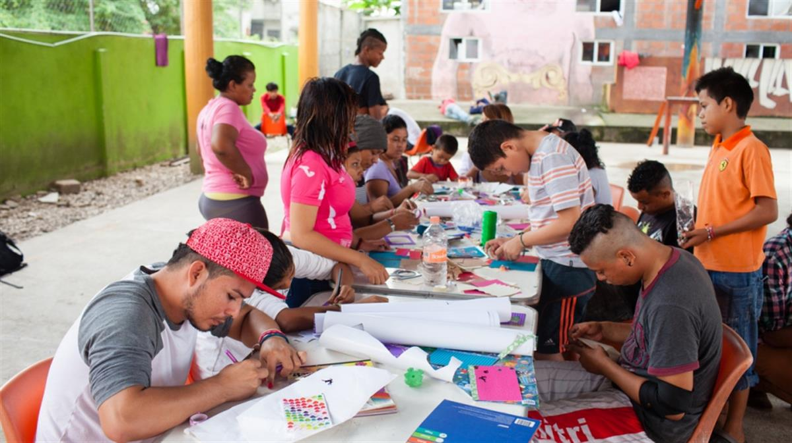

La 72, run by Franciscan Friar Tomás González Castillo near the Guatemalan border, is the first shelter in Mexico to cater to the needs of LGBTI refugees. © UNHCR/Sebastian Rich
La 72, run by Franciscan Friar Tomás González Castillo near the Guatemalan border, is the first shelter in Mexico to cater to the needs of LGBTI refugees. © UNHCR/Sebastian Rich
Friar Tomas has dedicated his entire life to protecting refugees and migrants in Mexico. His shelter 'La 72' has become a beacon of hope and protection for thousands of desperate families escaping violence in Central America. Friar Tomas is the official runner-up to the UNHCR Nansen Refugee Award http://www.unhcr.org/nansen
By Elisabet Diaz Sanmartin in Tenosique, Mexico | 25 August 2017 | Français
An unusual shelter for migrants and refugees near the Guatemalan border in southeast Mexico is providing a discrimination-free place of safety for LGBTI refugees fleeing violence and homophobia in Central America.
The shelter, known as La 72, is run by Friar Tomás González Castillo, a member of the Christian religious order of Franciscans. Friar Tomás has championed the rights of asylum-seekers in Mexico, including lesbian, gay, bisexual, transgender and intersex people, collectively known as LGBTI.
Every evening, Friar Tomás, addresses residents before lights out, welcoming any new arrivals, announcing forthcoming events and observing a minute’s silence for those suffering during their flight. Tonight he tells them: “Tomorrow the LGBTI collective will organize a party to celebrate pride and you are all invited.”
Since Friar Tomás founded the shelter in Tenosique in 2011, it has provided protection and humanitarian assistance to more than 50,000 people fleeing violence, extortion, forced recruitment and human rights violations in Honduras, El Salvador and Guatemala.
Open on original site ↗The Mexican Friar providing a safe haven for refugees
It was the first shelter in Mexico to cater to the needs of LGBTI refugees. Others in Mexico City and Guadalajara have also opened dedicated safe spaces for LGBTI people.
It accommodates up to 250 people at a time, including single mothers, minors and a growing number of families. In 2016, it received 43 LGBTI refugees, of whom 13 applied for asylum. This year, it welcomed 20 up to June 30.
Lilly*, 20, a Honduran trans-sexual woman, who stumbled barefoot and exhausted into La 72 after a two-day walk from the border, recalls her first night in the shelter: “I slept long hours for the first time in years. It was heaven”.
Her ordeal started long before, when she was kidnapped in Guatemala, forced into sexual slavery and constantly beaten and raped by the traffickers. She was finally set free by the Guatemalan authorities.
“LGBTI people are more vulnerable to intolerance and homophobia.”
“Everyone we receive in the shelter is victim of discrimination but the LGBTI people are more vulnerable to intolerance and homophobia,” said Friar Tomás. “They have suffered a lot.”
Maria*, a student who is one of the team of Mexican and international volunteers that help run the shelter, said: “The first rule we tell anyone arriving at the shelter is that violence is not tolerated. We are also very explicit that we host men, women and teenagers who belong to the LGBTI community.
“Discrimination is a form of violence. Any type of discrimination against them is not allowed here.”
Transgender refugee Scarlett*, like many, wore men’s clothing for safety reasons when she fled across the border. Today, for the pride party, she is wearing a white dress and has painted a rainbow flag on each cheek. “Here I feel free to be myself, I feel like a special lady,” she says.

- Eighteen-year-old Carlos* attends a drawing workshop at La 72, a shelter in Tenosique, Mexico. (*Name changed for protection reasons) © UNHCR/Markel Redondo
With UNHCR support, the shelter built dormitories and developed a programme to provide assistance and protection for the LGBTI refugees.
“La 72 is not just about feeding a few people, but about getting involved in their future,” Friar Tomás said. “I try to be part of their lives and give them a boost.
La 72 is the only shelter in Mexico that cates to the needs of LGBTI refugees.
“When we started implementing refugee assistance in 2013, we received two trans women,” says Friar Tomas. “Today there are 12 people in the LGBTI facilities.”
“LGBTI refugees have suffered abuse and discrimination, in addition to the trauma of displacement.”
Mark Manly, UNHCR Representative in Mexico, said there had been an increase in the number of people from LGBTI community fleeing gender-based discrimination in the north of Central America.
“LGBTI refugees have suffered serious abuse and discrimination in addition to the trauma of displacement, and it is important to provide a place where they feel safe and can begin the process of integration,” he said.
When refugees arrive in Mexico, they have few belongings but carry a huge emotional burden as a result of the violence and fear they have experienced in their home countries and during their journey. The first step towards recovery is having a safe place to stay.
A weekly meeting conducted by a psychologist provides a safe space to talk about their concerns and to unwind. “We have special moments here, just sitting together, talking and sometimes sharing a piece of chocolate,” says Lilly. “It is a small thing but I am grateful for those moments.”
Carlos*, a 20-year-old gay man who has lived in the shelter since last November, says La 72 has been an education for him: “They took care of me and I learnt to be self-confident,” he says.
He is awaiting a decision on his asylum application and dreams of moving to Mexico City to resume his studies. “It is time for me to move on … to be happy”, he says.
*Names have been changed for protection reasons
SOURCE: UNHCR